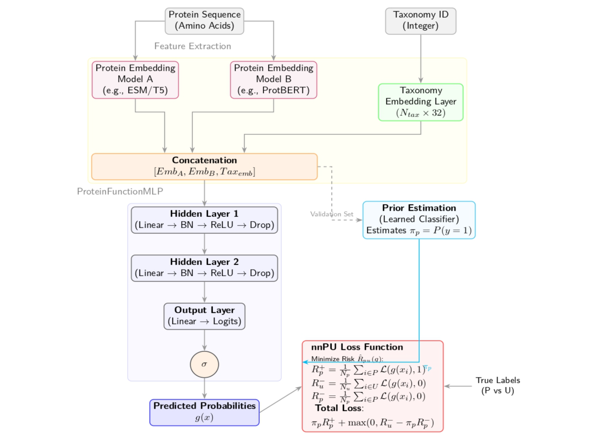
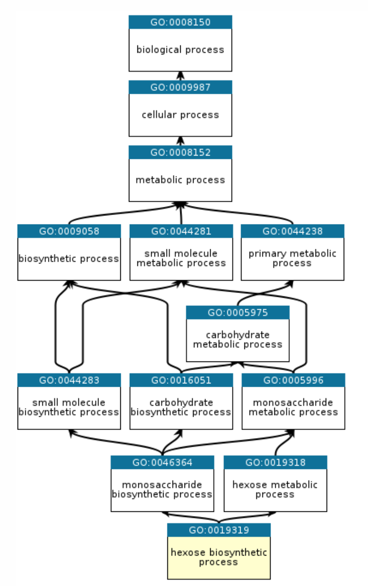
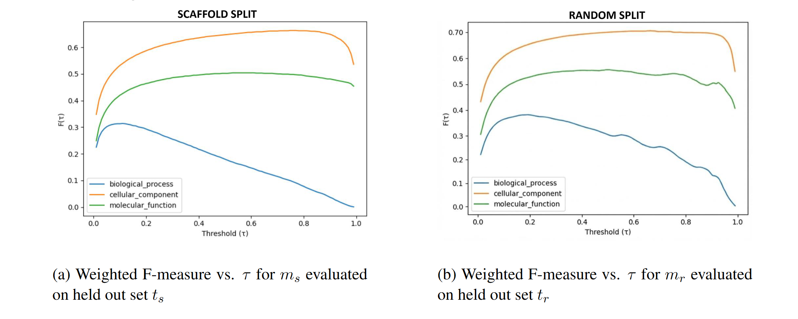
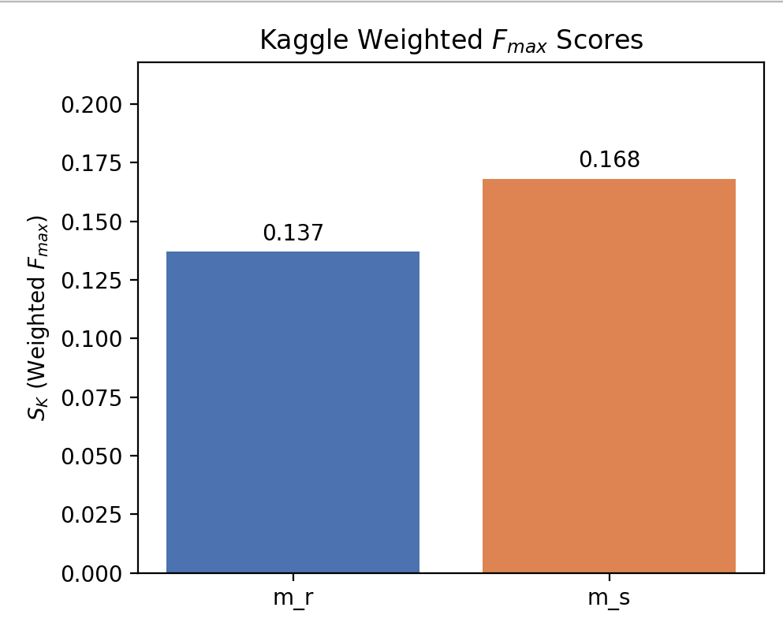

Predicting Protein Function

One of the biggest gaps in modern biology is how fast we can sequence proteins versus how slowly we can experimentally determine what those proteins actually do. Databases are flooded with sequences, but functional annotations lag behind—and they’re unevenly distributed across organisms and protein families. That imbalance creates subtle traps for machine learning models: it’s easy to look good on paper while quietly memorizing annotation patterns instead of learning real biology.
This project, completed for my AI in Healthcare class at MIT, was my attempt to confront that problem head-on. I built a Gene Ontology (GO) function prediction model using protein language model embeddings, trained it under positive–unlabeled supervision, and evaluated it using splits designed to expose shortcut learning. Below is how we approached it, what I learned, and how I’m planning to improve it.
The core issue: missing labels aren’t negatives
GO annotation is fundamentally asymmetric. If a protein has a GO term, that’s usually reliable. If it doesn’t, that doesn’t mean the function is absent—it often just hasn’t been tested yet. Treating missing labels as negatives is convenient, but wrong, and it rewards models that learn dataset artifacts rather than biology.
We trained our classifier using non-negative positive–unlabeled (nnPU) learning, which treats unannotated protein–term pairs as ambiguous rather than false. In practice, that meant some “easy” validation gains disappeared—but the model became more conservative and behaved better under true generalization tests.
Protein language models—used carefully
We built on top of two strong, complementary protein language models:
- ESM-2, which captures evolutionary patterns across large protein corpora
- ProtT5, which provides a different view of sequence semantics and context
Rather than fine-tuning these large models, we froze them and used their embeddings as features. We concatenated the ESM-2 and ProtT5 embeddings into a single representation, and we also added a small learned taxonomy embedding (based on NCBI taxon IDs) to give the model evolutionary context.
The classifier itself was intentionally lightweight: a simple MLP on top of these representations. Keeping the head small made it easier to interpret what was happening and to focus on the parts of the pipeline that tend to make or break biological ML—loss functions, label noise, and evaluation design.

Hierarchy matters (and we enforced it)
The Gene Ontology isn’t a flat label space—it’s a directed acyclic graph. A model predicting a specific function while assigning a lower score to its parent term is biologically incoherent, but neural networks will happily do it unless you enforce the constraint.
We implemented a simple ontology-aware post-processing step that enforces hierarchical consistency: every parent GO term’s score is at least as high as its children’s. This reduced obviously invalid outputs and improved interpretability.
The most important decision: how to split the data
The biggest conceptual takeaway from this project came from evaluation—not modeling. We trained two versions of the model:
- Random split model: proteins are randomly divided into train/test
- Scaffold split model: entire protein families are held out to reduce homology leakage
The random split model performed better on its own held-out set—which is exactly the issue. Random splits tend to leak homology, letting models succeed by matching near-duplicates instead of learning transferable sequence–function relationships. In contrast, scaffold splitting makes the task meaningfully harder and gives a more realistic sense of generalization.

A more realistic test: CAFA-style time-delayed evaluation
We also evaluated on the CAFA-style Kaggle benchmark, which is time-delayed: proteins gain new experimental annotations after model training. This tests something different from standard held-out splits—it asks whether the model can predict new functions (new labels) for proteins, including proteins it may have already seen.
Under this regime, the scaffold-trained model outperformed the random model. That was the moment the project fully clicked: the model that “looked worse” on conventional splits was actually learning something more transferable.

What I learned
- Evaluation is as important as architecture. A better split can matter more than a bigger model.
- Biological structure should be used explicitly. Ontologies and taxonomies aren’t noise—they’re signal.
- High validation accuracy can be misleading when labels are incomplete and correlations are strong.
- Simple models are underrated. With strong representations + principled training, they go far—and are easier to debug.
How I want to improve this next
If I extend this work, there are a few clear directions I’m excited about:
- Richer taxonomy modeling: replace the flat learned embedding with a hierarchical or graph-based representation of taxonomy to better handle unseen species.
- Better handling of rare GO terms: move beyond “top-k frequent terms” using information-content–aware objectives and ontology-aware label selection.
- Architecture experiments: test GO-DAG-aware models (e.g., GNNs over the ontology) and multimodal variants that incorporate predicted structure features.
- Failure mode analysis: systematically quantify where generalization breaks—especially across taxonomic boundaries and sparsely annotated branches.
Further reading
If you want the full technical details—dataset construction, nnPU loss, hierarchy enforcement, and the full evaluation setup— you can read the complete write-up here: